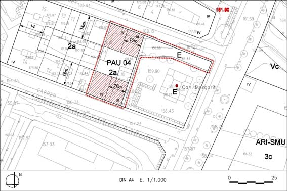

PAU 04 “Can Margarit” (Polígon d’actuació urbanística PAU – 04)

Objectiu: Regularitzar la zona edificable privada respecte a l’equipament.
Règim del sòl: Sòl Urbà No Consolidat
| Superfície del polígon: Ordenació Sistemes urbanístics: Equipament (E) Zones edificables: Residencial formant illa, tradicional eixample (clau 2a) |
1.187 m2s 352’72 m2s 834’28 m2s |
C.E.B.: (St) Sostre total |
S/ aplicació gàl·libs 1.942 m2st |